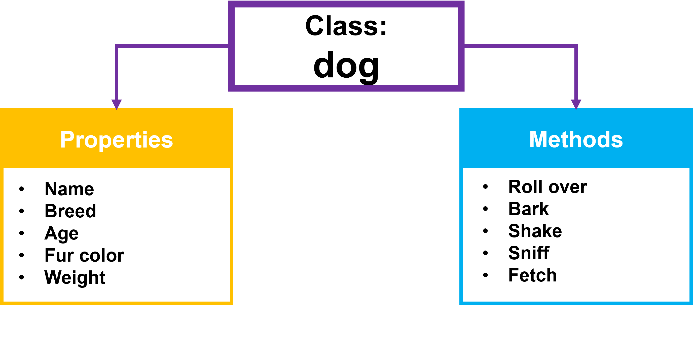
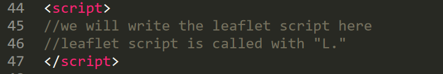

Week 6
JavaScript & Leaflet
Overview of Today's Class
- Presentations con't
- JavaScript (the 5-minute version)
- Leaflet Part 1
- Homework
JavaScript is a programming language used to control the actions & behaviours of webpages
Similar to CSS, JavaScript calls elements in HTML to manipulate
Also similar to CSS, you can include JS in multiple ways
- Added to the body between <script></script> tags
- In the head between <script></script> tags
- Linked in the head to an external file:
<script src="scripts/nameoffile.js"></script>
JavaScript does a lot more than manipulating HTML elements though!
JavaScript is a style of programming called Object-Oriented Programming. (OOP)
As the name implies, it is a type of computer programming centered on the concept of “objects.”
Warning: you're going to hear the word "object" a lot.
Primitive types in JavaScript. Everything else is an object.
| String |
|
|---|---|
| Number |
|
| Boolean |
|
| Null |
|
| Undefined |
|
| Symbol |
|
In JavaScript, objects are used to store stuff*
*not the technical term
Some JavaScript you will need to know for Leaflet
but hardly a comprehesive list
- Variables
- Numbers
- Concatenating Strings
- Objects
- Accessing properties in objects
- Arrays
- Functions
- Functions in objects
- Methods
Variables are used to store data values.
The variable named “x” has a value of 5
The variable named “name” has a value of Shelley
"var" versus "let" versus "const"
JavaScript has changed a lot in the last five years. “Var” has fallen out of favor for *reasons. The variable declarations "let" & "const" are now preferred.
Tutorials provided by leaflet still use "var", so I will use it for this course
Number variables
You can manipulate numerical values through variables (think algebra)
Concatenate String Variables
Concatenate String Variables
Concatenating Numbers & Strings
Note the output is a string!
Objects (again)
- Objects are variables that contains multiple values
- The values are written as key:value pairs
- Values are referred to as Properties
I'm a monster that forgot a comma after "blue" - don't forget that comma!
Accessing properties in objects
- objectName.property
- objectName["property"]
Other fun things you can do with object properties. Start here
Arrays
- Used to store multiple values in a variable
- Unlike objects, there is no value: property pairing in arrays
- Data to be used in Leaflet is often stored in arrays
Learn more about Arrays here
Functions
A block of code designed to perform a certain task.
Functions as properties of an object
- In a function definition, this refers to the "owner" of the function.
- In the example this is the function “fullName” belongs to the object “instructor”
Functions Notes
- Functions do not necessarily need parameters (but you need the parentheses – they will just be empty)
- Functions do not need a name (anonymous function)
- Functions are not executed immediately – they need to be called
Methods
- Methods are actions to be performed
- Functions are methods
- JavaScript has some built-in methods
- Different objects have different methods
- For example, .prompt & .getElementById are methods
Reference: Built in Methods
Some other things before we move on to Leaflet
When starting a new HTML document in sublime text...
- Check that you’re writing in HTML (click for language options if not)
- Type “<html” and hit enter
Boilerplate HTML language will popup (sorry for keeping this a secret last week)

Comments in JavaScript
//
Multiline: /*...*/
Notes about naming things in JavaScript
- JavaScript is case sensitive
shelleyhoover & shelleyHoover are different - Standard naming convention: camel Casing
First word is lower case, subsequent words are upper case with no spacing between words:
shelleyHoover
myMapFunction - First character cannot be a number
- Hyphens are not allowed (used for subtraction)
- Underscores are allowed
JavaScript Naming: Reserved Words
Certain words are reserved for built-in keywords or methods & cannot be used to name variables or functions
Finally, Leaflet!
Reminder, Leaflet is a JavaScript library used for web mapping
A JavaScript library is a library of pre-written JavaScript - so you do not have to write everything from scratch!
Steps to creating your first Leaflet Map
- Set up your HTML file
- Add a div for your map
- Link the Leaflet Library to your HTML file
- Initialize your map
- Add Leaflet Basemap Layers
- Manually Add Features
- Style Features
- Add pop-ups
Step 1: Set up your HTML file
Add Leaflet to document
Similar to google fonts, link Leaflet in the head of your HTML file
Copy the following code into the head section of your HTML document
Create a div for your map
Add Script tags to include leaflet
Step 2: Initialize your map
- Create variable (titled “myMap” here, can be anything)
- Call leaflet method “map” (L.map()), and tell leaflet to show it in the map div
- Use “setView” to set the coordinates the map center on when the webpage opens, and the zoom level
Whats going on here?
I have two decimal places here for visual clarity, but you can include many more. 5 decimals places will get you within a few feet of your exact point.
Reminder: Zoom Levels
The higher the number, the more local the zoom. Most tile layers go to Zoom 18.
Step 3: Add Basemap
To use one of these basemaps:
Copy the PLAIN JS into your script section

Now add the basemap to your map!
.addTo(map)
Note, all are free. Some require registration
Step 4: Manually Add Features
Next week we will go over GeoJSONs and more complicated data handling